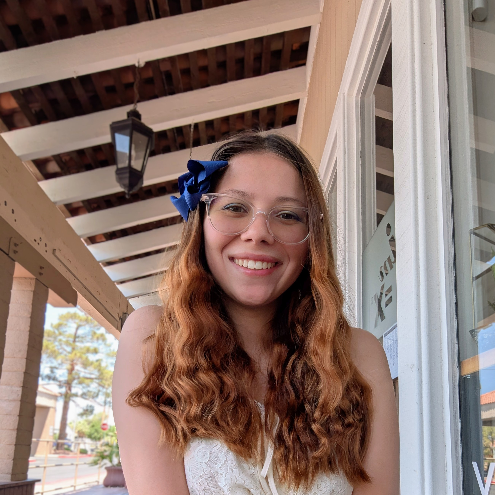

Learn More About The Artist

Hi there! I’m Emily Daclan, and I’m excited to share a bit about myself. I’m currently studying economics and graphic design at UNLV. Growing up, I enjoyed creating traditional art like murals and portraits, but now I’ve transitioned to digital art. I love making advertisements and product designs that really pop!
A big part of my artwork is creating pieces that have meaning, especially for those who feel silenced or desperate. I enjoy combining illustrations with typography and vibrant color palettes to express my messages. I truly believe that art is a powerful way to communicate.
On a personal note, I’m a devoted Christian, and I absolutely love Jesus. I aim to honor Him through my work. Just as He spoke the world into existence, I want my creations to reflect that original creativity. Thanks for letting me share a little about my journey with you!